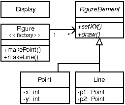

Introduction
Many software developers are attracted to the idea of aspect-oriented programming (AOP) but unsure about how to begin using the technology. They recognize the concept of crosscutting concerns, and know that they have had problems with the implementation of such concerns in the past. But there are many questions about how to adopt AOP into the development process. Common questions include:
-
Can I use aspects in my existing code?
-
What kinds of benefits can I expect to get from using aspects?
-
How do I find aspects in my programs?
-
How steep is the learning curve for AOP?
-
What are the risks of using this new technology?
This chapter addresses these questions in the context of AspectJ: a general-purpose aspect-oriented extension to Java. A series of abridged examples illustrate the kinds of aspects programmers may want to implement using AspectJ and the benefits associated with doing so. Readers who would like to understand the examples in more detail, or who want to learn how to program examples like these, can find more complete examples and supporting material linked from the AspectJ web site.
A significant risk in adopting any new technology is going too far too fast. Concern about this risk causes many organizations to be conservative about adopting new technology. To address this issue, the examples in this chapter are grouped into three broad categories, with aspects that are easier to adopt into existing development projects coming earlier in this chapter. The next section, Introduction to AspectJ, we present the core of AspectJ’s features, and in Development Aspects, we present aspects that facilitate tasks such as debugging, testing and performance tuning of applications. And, in the section following, Production Aspects, we present aspects that implement crosscutting functionality common in Java applications. We will defer discussing a third category of aspects, reusable aspects, until The AspectJ Language.
These categories are informal, and this ordering is not the only way to adopt AspectJ. Some developers may want to use a production aspect right away. But our experience with current AspectJ users suggests that this is one ordering that allows developers to get experience with (and benefit from) AOP technology quickly, while also minimizing risk.
Introduction to AspectJ
This section presents a brief introduction to the features of AspectJ used later in this chapter. These features are at the core of the language, but this is by no means a complete overview of AspectJ.
The features are presented using a simple figure editor system. A
Figure consists of a number of FigureElements, which can be either
Points or Lines. The Figure class provides factory services. There
is also a Display. Most example programs later in this chapter are
based on this system as well.
FigureEditor example">
The motivation for AspectJ (and likewise for aspect-oriented programming) is the realization that there are issues or concerns that are not well captured by traditional programming methodologies. Consider the problem of enforcing a security policy in some application. By its nature, security cuts across many of the natural units of modularity of the application. Moreover, the security policy must be uniformly applied to any additions as the application evolves. And the security policy that is being applied might itself evolve. Capturing concerns like a security policy in a disciplined way is difficult and error-prone in a traditional programming language.
Concerns like security cut across the natural units of modularity. For object-oriented programming languages, the natural unit of modularity is the class. But in object-oriented programming languages, crosscutting concerns are not easily turned into classes precisely because they cut across classes, and so these aren’t reusable, they can’t be refined or inherited, they are spread through out the program in an undisciplined way, in short, they are difficult to work with.
Aspect-oriented programming is a way of modularizing crosscutting concerns much like object-oriented programming is a way of modularizing common concerns. AspectJ is an implementation of aspect-oriented programming for Java.
AspectJ adds to Java just one new concept, a join point — and that’s really just a name for an existing Java concept. It adds to Java only a few new constructs: pointcuts, advice, inter-type declarations and aspects. Pointcuts and advice dynamically affect program flow, inter-type declarations statically affects a program’s class hierarchy, and aspects encapsulate these new constructs.
A join point is a well-defined point in the program flow. A pointcut picks out certain join points and values at those points. A piece of advice is code that is executed when a join point is reached. These are the dynamic parts of AspectJ.
AspectJ also has different kinds of inter-type declarations that allow the programmer to modify a program’s static structure, namely, the members of its classes and the relationship between classes.
AspectJ’s aspect are the unit of modularity for crosscutting concerns. They behave somewhat like Java classes, but may also include pointcuts, advice and inter-type declarations.
In the sections immediately following, we are first going to look at join points and how they compose into pointcuts. Then we will look at advice, the code which is run when a pointcut is reached. We will see how to combine pointcuts and advice into aspects, AspectJ’s reusable, inheritable unit of modularity. Lastly, we will look at how to use inter-type declarations to deal with crosscutting concerns of a program’s class structure.
The Dynamic Join Point Model
A critical element in the design of any aspect-oriented language is the join point model. The join point model provides the common frame of reference that makes it possible to define the dynamic structure of crosscutting concerns. This chapter describes AspectJ’s dynamic join points, in which join points are certain well-defined points in the execution of the program.
AspectJ provides for many kinds of join points, but this chapter discusses only one of them: method call join points. A method call join point encompasses the actions of an object receiving a method call. It includes all the actions that comprise a method call, starting after all arguments are evaluated up to and including return (either normally or by throwing an exception).
Each method call at runtime is a different join point, even if it comes from the same call expression in the program. Many other join points may run while a method call join point is executing — all the join points that happen while executing the method body, and in those methods called from the body. We say that these join points execute in the dynamic context of the original call join point.
Pointcuts
In AspectJ, pointcuts pick out certain join points in the program flow. For example, the pointcut
call(void Point.setX(int))picks out each join point that is a call to a method that has the
signature void Point.setX(int) - that is, Point's void setX method
with a single int parameter.
A pointcut can be built out of other pointcuts with and, or, and not
(spelled &&, ||, and !). For example:
call(void Point.setX(int)) ||
call(void Point.setY(int))picks out each join point that is either a call to setX or a call to
setY.
Pointcuts can identify join points from many different types - in other words, they can crosscut types. For example,
call(void FigureElement.setXY(int,int)) ||
call(void Point.setX(int)) ||
call(void Point.setY(int)) ||
call(void Line.setP1(Point)) ||
call(void Line.setP2(Point));picks out each join point that is a call to one of five methods (the first of which is an interface method, by the way).
In our example system, this pointcut captures all the join points when a
FigureElement moves. While this is a useful way to specify this
crosscutting concern, it is a bit of a mouthful. So AspectJ allows
programmers to define their own named pointcuts with the pointcut
form. So the following declares a new, named pointcut:
pointcut move():
call(void FigureElement.setXY(int,int)) ||
call(void Point.setX(int)) ||
call(void Point.setY(int)) ||
call(void Line.setP1(Point)) ||
call(void Line.setP2(Point));and whenever this definition is visible, the programmer can simply use
move() to capture this complicated pointcut.
The previous pointcuts are all based on explicit enumeration of a set of method signatures. We sometimes call this name-based crosscutting. AspectJ also provides mechanisms that enable specifying a pointcut in terms of properties of methods other than their exact name. We call this property-based crosscutting. The simplest of these involve using wildcards in certain fields of the method signature. For example, the pointcut
call(void Figure.make*(..))picks out each join point that’s a call to a void method defined on
Figure whose the name begins with “make” regardless of the method’s
parameters. In our system, this picks out calls to the factory methods
makePoint and makeLine. The pointcut
call(public * Figure.* (..))picks out each call to Figure's public methods.
But wildcards aren’t the only properties AspectJ supports. Another
pointcut, cflow, identifies join points based on whether they occur in
the dynamic context of other join points. So
cflow(move())picks out each join point that occurs in the dynamic context of the join
points picked out by move(), our named pointcut defined above. So this
picks out each join points that occurrs between when a move method is
called and when it returns (either normally or by throwing an
exception).
Advice
So pointcuts pick out join points. But they don’t do anything apart from picking out join points. To actually implement crosscutting behavior, we use advice. Advice brings together a pointcut (to pick out join points) and a body of code (to run at each of those join points).
AspectJ has several different kinds of advice. Before advice runs as a join point is reached, before the program proceeds with the join point. For example, before advice on a method call join point runs before the actual method starts running, just after the arguments to the method call are evaluated.
before(): move() {
System.out.println("about to move");
}After advice on a particular join point runs after the program
proceeds with that join point. For example, after advice on a method
call join point runs after the method body has run, just before before
control is returned to the caller. Because Java programs can leave a
join point 'normally' or by throwing an exception, there are three kinds
of after advice: after returning, after
throwing, and plain after (which runs after returning or
throwing, like Java’s finally).
after() returning: move() {
System.out.println("just successfully moved");
}Around advice on a join point runs as the join point is reached, and has explicit control over whether the program proceeds with the join point. Around advice is not discussed in this section.
Exposing Context in Pointcuts
Pointcuts not only pick out join points, they can also expose part of the execution context at their join points. Values exposed by a pointcut can be used in the body of advice declarations.
An advice declaration has a parameter list (like a method) that gives names to all the pieces of context that it uses. For example, the after advice
after(FigureElement fe, int x, int y) returning:
// SomePointcut...
{
// SomeBody
}uses three pieces of exposed context, a FigureElement named fe, and
two ints named x and y.
The body of the advice uses the names just like method parameters, so
after(FigureElement fe, int x, int y) returning:
// SomePointcut...
{
System.out.println(fe + " moved to (" + x + ", " + y + ")");
}The advice’s pointcut publishes the values for the advice’s arguments.
The three primitive pointcuts this, target and args are used to
publish these values. So now we can write the complete piece of advice:
after(FigureElement fe, int x, int y) returning:
call(void FigureElement.setXY(int, int))
&& target(fe)
&& args(x, y)
{
System.out.println(fe + " moved to (" + x + ", " + y + ")");
}The pointcut exposes three values from calls to setXY: the target
FigureElement — which it publishes as fe, so it becomes the first
argument to the after advice — and the two int arguments — which it
publishes as x and y, so they become the second and third argument
to the after advice.
So the advice prints the figure element that was moved and its new x
and y coordinates after each setXY method call.
A named pointcut may have parameters like a piece of advice. When the
named pointcut is used (by advice, or in another named pointcut), it
publishes its context by name just like the this, target and args
pointcut. So another way to write the above advice is
pointcut setXY(FigureElement fe, int x, int y):
call(void FigureElement.setXY(int, int))
&& target(fe)
&& args(x, y);
after(FigureElement fe, int x, int y) returning: setXY(fe, x, y) {
System.out.println(fe + " moved to (" + x + ", " + y + ").");
}Inter-type declarations
Inter-type declarations in AspectJ are declarations that cut across classes and their hierarchies. They may declare members that cut across multiple classes, or change the inheritance relationship between classes. Unlike advice, which operates primarily dynamically, introduction operates statically, at compile-time.
Consider the problem of expressing a capability shared by some existing classes that are already part of a class hierarchy, i.e. they already extend a class. In Java, one creates an interface that captures this new capability, and then adds to each affected class a method that implements this interface.
AspectJ can express the concern in one place, by using inter-type declarations. The aspect declares the methods and fields that are necessary to implement the new capability, and associates the methods and fields to the existing classes.
Suppose we want to have Screen objects observe changes to Point
objects, where Point is an existing class. We can implement this by
writing an aspect declaring that the class Point Point has an instance
field, observers, that keeps track of the Screen objects that are
observing Points.
aspect PointObserving {
private Vector Point.observers = new Vector();
// ...
}The observers field is private, so only PointObserving can see it.
So observers are added or removed with the static methods addObserver
and removeObserver on the aspect.
aspect PointObserving {
private Vector Point.observers = new Vector();
public static void addObserver(Point p, Screen s) {
p.observers.add(s);
}
public static void removeObserver(Point p, Screen s) {
p.observers.remove(s);
}
//...
}Along with this, we can define a pointcut changes that defines what we
want to observe, and the after advice defines what we want to do when we
observe a change.
aspect PointObserving {
private Vector Point.observers = new Vector();
public static void addObserver(Point p, Screen s) {
p.observers.add(s);
}
public static void removeObserver(Point p, Screen s) {
p.observers.remove(s);
}
pointcut changes(Point p): target(p) && call(void Point.set*(int));
after(Point p): changes(p) {
Iterator iter = p.observers.iterator();
while ( iter.hasNext() ) {
updateObserver(p, (Screen)iter.next());
}
}
static void updateObserver(Point p, Screen s) {
s.display(p);
}
}Note that neither Screen's nor Point's code has to be modified, and
that all the changes needed to support this new capability are local to
this aspect.
Aspects
Aspects wrap up pointcuts, advice, and inter-type declarations in a a modular unit of crosscutting implementation. It is defined very much like a class, and can have methods, fields, and initializers in addition to the crosscutting members. Because only aspects may include these crosscutting members, the declaration of these effects is localized.
Like classes, aspects may be instantiated, but AspectJ controls how that
instantiation happens — so you can’t use Java’s new form to build new
aspect instances. By default, each aspect is a singleton, so one aspect
instance is created. This means that advice may use non-static fields of
the aspect, if it needs to keep state around:
aspect Logging {
OutputStream logStream = System.err;
before(): move() {
logStream.println("about to move");
}
}Aspects may also have more complicated rules for instantiation, but these will be described in a later chapter.
Development Aspects
The next two sections present the use of aspects in increasingly sophisticated ways. Development aspects are easily removed from production builds. Production aspects are intended to be used in both development and in production, but tend to affect only a few classes.
This section presents examples of aspects that can be used during development of Java applications. These aspects facilitate debugging, testing and performance tuning work. The aspects define behavior that ranges from simple tracing, to profiling, to testing of internal consistency within the application. Using AspectJ makes it possible to cleanly modularize this kind of functionality, thereby making it possible to easily enable and disable the functionality when desired.
Tracing
This first example shows how to increase the visibility of the internal workings of a program. It is a simple tracing aspect that prints a message at specified method calls. In our figure editor example, one such aspect might simply trace whenever points are drawn.
aspect SimpleTracing {
pointcut tracedCall():
call(void FigureElement.draw(GraphicsContext));
before(): tracedCall() {
System.out.println("Entering: " + thisJoinPoint);
}
}This code makes use of the thisJoinPoint special variable. Within all
advice bodies this variable is bound to an object that describes the
current join point. The effect of this code is to print a line like the
following every time a figure element receives a draw method call:
Entering: call(void FigureElement.draw(GraphicsContext))To understand the benefit of coding this with AspectJ consider changing
the set of method calls that are traced. With AspectJ, this just
requires editing the definition of the tracedCalls pointcut and
recompiling. The individual methods that are traced do not need to be
edited.
When debugging, programmers often invest considerable effort in figuring out a good set of trace points to use when looking for a particular kind of problem. When debugging is complete or appears to be complete it is frustrating to have to lose that investment by deleting trace statements from the code. The alternative of just commenting them out makes the code look bad, and can cause trace statements for one kind of debugging to get confused with trace statements for another kind of debugging.
With AspectJ it is easy to both preserve the work of designing a good set of trace points and disable the tracing when it isn’t being used. This is done by writing an aspect specifically for that tracing mode, and removing that aspect from the compilation when it is not needed.
This ability to concisely implement and reuse debugging configurations that have proven useful in the past is a direct result of AspectJ modularizing a crosscutting design element the set of methods that are appropriate to trace when looking for a given kind of information.
Profiling and Logging
Our second example shows you how to do some very specific profiling. Although many sophisticated profiling tools are available, and these can gather a variety of information and display the results in useful ways, you may sometimes want to profile or log some very specific behavior. In these cases, it is often possible to write a simple aspect similar to the ones above to do the job.
For example, the following aspect counts the number of calls to the
rotate method on a Line and the number of calls to the set*
methods of a Point that happen within the control flow of those calls
to rotate:
aspect SetsInRotateCounting {
int rotateCount = 0;
int setCount = 0;
before(): call(void Line.rotate(double)) {
rotateCount++;
}
before():
call(void Point.set*(int)) &&
cflow(call(void Line.rotate(double)))
{
setCount++;
}
}In effect, this aspect allows the programmer to ask very specific questions like
How many times is the
rotatemethod defined onLineobjects called?
and
How many times are methods defined on
Pointobjects whose name begins with"set"called in fulfilling thoserotatecalls?
Such questions may be difficult to express using standard profiling or logging tools.
Pre- and Post-Conditions
Many programmers use the "Design by Contract" style popularized by Bertand Meyer in Object-Oriented Software Construction, 2/e. In this style of programming, explicit pre-conditions test that callers of a method call it properly and explicit post-conditions test that methods properly do the work they are supposed to.
AspectJ makes it possible to implement pre- and post-condition testing in modular form. For example, this code
aspect PointBoundsChecking {
pointcut setX(int x):
(call(void FigureElement.setXY(int, int)) && args(x, *))
|| (call(void Point.setX(int)) && args(x));
pointcut setY(int y):
(call(void FigureElement.setXY(int, int)) && args(*, y))
|| (call(void Point.setY(int)) && args(y));
before(int x): setX(x) {
if ( x < MIN_X || x > MAX_X )
throw new IllegalArgumentException("x is out of bounds.");
}
before(int y): setY(y) {
if ( y < MIN_Y || y > MAX_Y )
throw new IllegalArgumentException("y is out of bounds.");
}
}implements the bounds checking aspect of pre-condition testing for
operations that move points. Notice that the setX pointcut refers to
all the operations that can set a Point’s x coordinate; this includes
the setX method, as well as half of the setXY method. In this sense
the setX pointcut can be seen as involving very fine-grained
crosscutting - it names the the setX method and half of the setXY
method.
Even though pre- and post-condition testing aspects can often be used only during testing, in some cases developers may wish to include them in the production build as well. Again, because AspectJ makes it possible to modularize these crosscutting concerns cleanly, it gives developers good control over this decision.
Contract Enforcement
The property-based crosscutting mechanisms can be very useful in defining more sophisticated contract enforcement. One very powerful use of these mechanisms is to identify method calls that, in a correct program, should not exist. For example, the following aspect enforces the constraint that only the well-known factory methods can add an element to the registry of figure elements. Enforcing this constraint ensures that no figure element is added to the registry more than once.
aspect RegistrationProtection {
pointcut register(): call(void Registry.register(FigureElement));
pointcut canRegister(): withincode(static * FigureElement.make*(..));
before(): register() && !canRegister() {
throw new IllegalAccessException("Illegal call " + thisJoinPoint);
}
}This aspect uses the withincode primitive pointcut to denote all join
points that occur within the body of the factory methods on
FigureElement (the methods with names that begin with “make”). This
is a property-based pointcut because it identifies join points based not
on their signature, but rather on the property that they occur
specifically within the code of another method. The before advice
declaration effectively says signal an error for any calls to register
that are not within the factory methods.
This advice throws a runtime exception at certain join points, but
AspectJ can do better. Using the declare error form, we can have the
compiler signal the error.
aspect RegistrationProtection {
pointcut register(): call(void Registry.register(FigureElement));
pointcut canRegister(): withincode(static * FigureElement.make*(..));
declare error: register() && !canRegister(): "Illegal call"
}When using this aspect, it is impossible for the compiler to compile
programs with these illegal calls. This early detection is not always
possible. In this case, since we depend only on static information (the
withincode pointcut picks out join points totally based on their code,
and the call pointcut here picks out join points statically). Other
enforcement, such as the precondition enforcement, above, does require
dynamic information such as the runtime value of parameters.
Configuration Management
Configuration management for aspects can be handled using a variety of make-file like techniques. To work with optional aspects, the programmer can simply define their make files to either include the aspect in the call to the AspectJ compiler or not, as desired.
Developers who want to be certain that no aspects are included in the production build can do so by configuring their make files so that they use a traditional Java compiler for production builds. To make it easy to write such make files, the AspectJ compiler has a command-line interface that is consistent with ordinary Java compilers.
Production Aspects
This section presents examples of aspects that are inherently intended to be included in the production builds of an application. Production aspects tend to add functionality to an application rather than merely adding more visibility of the internals of a program. Again, we begin with name-based aspects and follow with property-based aspects. Name-based production aspects tend to affect only a small number of methods. For this reason, they are a good next step for projects adopting AspectJ. But even though they tend to be small and simple, they can often have a significant effect in terms of making the program easier to understand and maintain.
Change Monitoring
The first example production aspect shows how one might implement some simple functionality where it is problematic to try and do it explicitly. It supports the code that refreshes the display. The role of the aspect is to maintain a dirty bit indicating whether or not an object has moved since the last time the display was refreshed.
Implementing this functionality as an aspect is straightforward. The
testAndClear method is called by the display code to find out whether
a figure element has moved recently. This method returns the current
state of the dirty flag and resets it to false. The pointcut move
captures all the method calls that can move a figure element. The after
advice on move sets the dirty flag whenever an object moves.
aspect MoveTracking {
private static boolean dirty = false;
public static boolean testAndClear() {
boolean result = dirty;
dirty = false;
return result;
}
pointcut move():
call(void FigureElement.setXY(int, int)) ||
call(void Line.setP1(Point)) ||
call(void Line.setP2(Point)) ||
call(void Point.setX(int)) ||
call(void Point.setY(int));
after() returning: move() {
dirty = true;
}
}Even this simple example serves to illustrate some of the important
benefits of using AspectJ in production code. Consider implementing this
functionality with ordinary Java: there would likely be a helper class
that contained the dirty flag, the testAndClear method, as well as a
setFlag method. Each of the methods that could move a figure element
would include a call to the setFlag method. Those calls, or rather the
concept that those calls should happen at each move operation, are the
crosscutting concern in this case.
The AspectJ implementation has several advantages over the standard implementation:
The structure of the crosscutting concern is captured explicitly. The
moves pointcut clearly states all the methods involved, so the
programmer reading the code sees not just individual calls to setFlag,
but instead sees the real structure of the code. The IDE support
included with AspectJ automatically reminds the programmer that this
aspect advises each of the methods involved. The IDE support also
provides commands to jump to the advice from the method and vice-versa.
Evolution is easier. If, for example, the aspect needs to be revised to record not just that some figure element moved, but rather to record exactly which figure elements moved, the change would be entirely local to the aspect. The pointcut would be updated to expose the object being moved, and the advice would be updated to record that object. The paper An Overview of AspectJ (available linked off of the AspectJ web site — https://eclipse.org/aspectj), presented at ECOOP 2001, presents a detailed discussion of various ways this aspect could be expected to evolve.
The functionality is easy to plug in and out. Just as with development aspects, production aspects may need to be removed from the system, either because the functionality is no longer needed at all, or because it is not needed in certain configurations of a system. Because the functionality is modularized in a single aspect this is easy to do.
The implementation is more stable. If, for example, the programmer
adds a subclass of Line that overrides the existing methods, this
advice in this aspect will still apply. In the ordinary Java
implementation the programmer would have to remember to add the call to
setFlag in the new overriding method. This benefit is often even more
compelling for property-based aspects (see the section
Providing Consistent
Behavior).
Context Passing
The crosscutting structure of context passing can be a significant source of complexity in Java programs. Consider implementing functionality that would allow a client of the figure editor (a program client rather than a human) to set the color of any figure elements that are created. Typically this requires passing a color, or a color factory, from the client, down through the calls that lead to the figure element factory. All programmers are familiar with the inconvenience of adding a first argument to a number of methods just to pass this kind of context information.
Using AspectJ, this kind of context passing can be implemented in a
modular way. The following code adds after advice that runs only when
the factory methods of Figure are called in the control flow of a
method on a ColorControllingClient.
aspect ColorControl {
pointcut CCClientCflow(ColorControllingClient client):
cflow(call(* * (..)) && target(client));
pointcut make(): call(FigureElement Figure.make*(..));
after (ColorControllingClient c) returning (FigureElement fe):
make() && CCClientCflow(c)
{
fe.setColor(c.colorFor(fe));
}
}This aspect affects only a small number of methods, but note that the non-AOP implementation of this functionality might require editing many more methods, specifically, all the methods in the control flow from the client to the factory. This is a benefit common to many property-based aspects while the aspect is short and affects only a modest number of benefits, the complexity the aspect saves is potentially much larger.
Providing Consistent Behavior
This example shows how a property-based aspect can be used to provide
consistent handling of functionality across a large set of operations.
This aspect ensures that all public methods of the com.bigboxco
package log any Errors they throw to their caller (in Java, an Error is
like an Exception, but it indicates that something really bad and
usually unrecoverable has happened). The publicMethodCall pointcut
captures the public method calls of the package, and the after advice
runs whenever one of those calls throws an Error. The advice logs that
Error and then the throw resumes.
aspect PublicErrorLogging {
Log log = new Log();
pointcut publicMethodCall():
call(public * com.bigboxco.*.*(..));
after() throwing (Error e): publicMethodCall() {
log.write(e);
}
}In some cases this aspect can log an exception twice. This happens if
code inside the com.bigboxco package itself calls a public method of
the package. In that case this code will log the error at both the
outermost call into the com.bigboxco package and the re-entrant call.
The cflow primitive pointcut can be used in a nice way to exclude
these re-entrant calls:
after() throwing (Error e):
publicMethodCall() && !cflow(publicMethodCall())
{
log.write(e);
}The following aspect is taken from work on the AspectJ compiler. The
aspect advises about 35 methods in the JavaParser class. The
individual methods handle each of the different kinds of elements that
must be parsed. They have names like parseMethodDec, parseThrows,
and parseExpr.
aspect ContextFilling {
pointcut parse(JavaParser jp):
call(* JavaParser.parse*(..))
&& target(jp)
&& !call(Stmt parseVarDec(boolean)); // var decs are tricky
around(JavaParser jp) returns ASTObject: parse(jp) {
Token beginToken = jp.peekToken();
ASTObject ret = proceed(jp);
if (ret != null) jp.addContext(ret, beginToken);
return ret;
}
}This example exhibits a property found in many aspects with large
property-based pointcuts. In addition to a general property based
pattern call(* JavaParser.parse*(..)) it includes an exception to the
pattern !call(Stmt parseVarDec(boolean)). The exclusion of parseVarDec happens
because the parsing of variable declarations in Java is too complex to
fit with the clean pattern of the other parse* methods. Even with the
explicit exclusion this aspect is a clear expression of a clean
crosscutting modularity. Namely that all parse* methods that return
ASTObjects, except for parseVarDec share a common behavior for
establishing the parse context of their result.
The process of writing an aspect with a large property-based pointcut, and of developing the appropriate exceptions can clarify the structure of the system. This is especially true, as in this case, when refactoring existing code to use aspects. When we first looked at the code for this aspect, we were able to use the IDE support provided in AJDE for JBuilder to see what methods the aspect was advising compared to our manual coding. We quickly discovered that there were a dozen places where the aspect advice was in effect but we had not manually inserted the required functionality. Two of these were bugs in our prior non-AOP implementation of the parser. The other ten were needless performance optimizations. So, here, refactoring the code to express the crosscutting structure of the aspect explicitly made the code more concise and eliminated latent bugs.
Conclusion
AspectJ is a simple and practical aspect-oriented extension to Java. With just a few new constructs, AspectJ provides support for modular implementation of a range of crosscutting concerns.
Adoption of AspectJ into an existing Java development project can be a straightforward and incremental task. One path is to begin by using only development aspects, going on to using production aspects and then reusable aspects after building up experience with AspectJ. Adoption can follow other paths as well. For example, some developers will benefit from using production aspects right away. Others may be able to write clean reusable aspects almost right away.
AspectJ enables both name-based and property based crosscutting. Aspects that use name-based crosscutting tend to affect a small number of other classes. But despite their small scale, they can often eliminate significant complexity compared to an ordinary Java implementation. Aspects that use property-based crosscutting can have small or large scale.
Using AspectJ results in clean well-modularized implementations of crosscutting concerns. When written as an AspectJ aspect the structure of a crosscutting concern is explicit and easy to understand. Aspects are also highly modular, making it possible to develop plug-and-play implementations of crosscutting functionality.
AspectJ provides more functionality than was covered by this short introduction. The next chapter, The AspectJ Language, covers in detail more of the features of the AspectJ language. The following chapter, Examples, then presents some carefully chosen examples that show you how AspectJ might be used. We recommend that you read the next two chapters carefully before deciding to adopt AspectJ into a project.